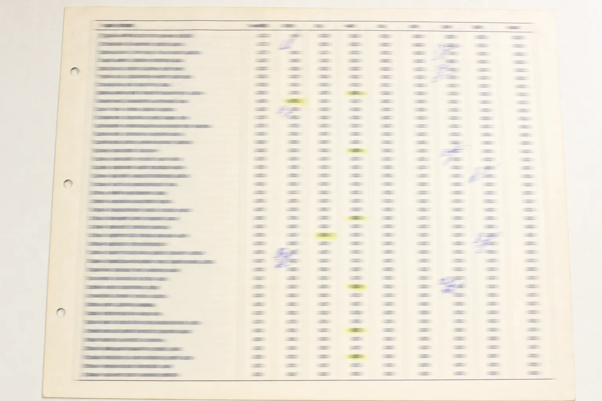
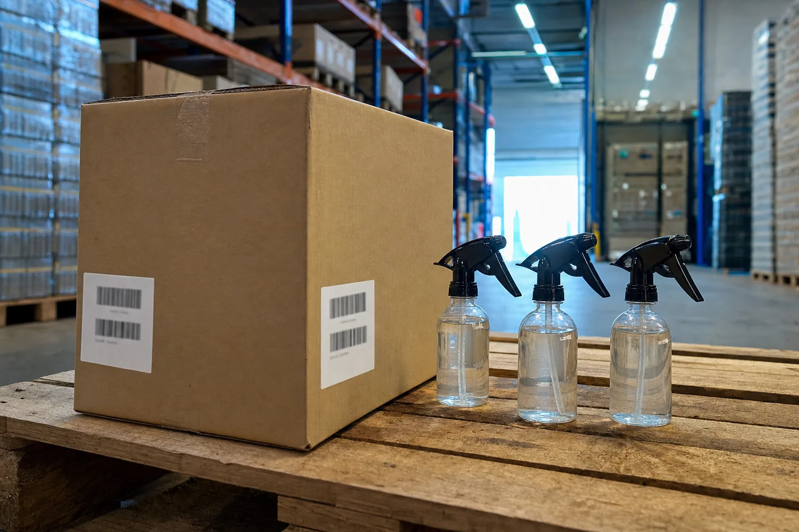

EL TÍO AI AUDIT · DISTRIBUIDORAS Y MAYORISTAS · FOLIO 001
Alguien lo lee, busca cada producto y arma la cotización a mano. Esa traducción es el trabajo, y hoy vive dentro de una cabeza.
CÓMO LLEGA UN PEDIDO
Ninguno está mal. El cliente pide como vende, y tu casa vende por bulto cerrado. La conversión entre los dos es el trabajo, y es donde se va el día del vendedor.
Las de siempre son las del último pedido, y la chica no es un producto: es el formato.
Entra en horario de venta y ocupa a un vendedor que estaba vendiendo.
El código no está: hay que deducirlo de la descripción, renglón por renglón.
Cada cliente arma su planilla como quiere, y ninguna coincide con la anterior.
UN PEDIDO, RENGLÓN POR RENGLÓN
Ocho renglones de un pedido de verdad. Seis se traducen solos. Los otros dos vuelven al vendedor, y ahí está la media hora de teléfono que hace que el precio salga mañana.
0 de 8 traducidas. Todavía sin leer.
DESPUÉS DE LA TRADUCCIÓN
Todo lo que viene después ya está resuelto en tu casa: se busca, se arma y se despacha. Lo que no está resuelto es el renglón que nadie pudo traducir, y ese frena el pedido entero.
LA BASE · SE IMPLEMENTA SIEMPRE
Va en cualquier caso, sea cual sea lo que encuentre el Audit. Sin esto, la tabla de equivalencias sigue viviendo en la cabeza del vendedor de veinte años.
| 001 | Tu base de datos, ordenadaEl catálogo y los clientes, ordenados y sin duplicados. Es el requisito de todo lo demás. |
| 002 | CRMClientes y presupuestos abiertos en un lugar, con el seguimiento a la vista de todo el equipo. |
| 003 | Web propia y editableEl sitio con el catálogo y el pedido, para que el cliente pueda comprar sin esperar a nadie. |
| 004 | Chatbot que atiende y calificaToma el pedido y responde disponibilidad sin ocupar a un vendedor en horario de venta. |
| 005 | Newsletter propioTu lista para avisar reposición, novedades y listas de precio, sin depender del vendedor. |
QUÉ AUDITAMOS
Entramos por un problema concreto y miramos toda la operación. Al final de la recorrida la cuenta tiene que cerrar: las siete áreas salieron y las siete volvieron con algo escrito.
| Folio | Área | Cargado | Entregado |
|---|---|---|---|
| 001 | VENTASCotizaciones, presupuestos abiertos y clientes que dejaron de comprar. | 1 | 1 |
| 002 | OPERACIONESCómo entra un pedido y cuántas manos lo tocan antes del ERP. | 1 | 1 |
| 003 | DATOSEl catálogo y la base de clientes: si están limpios o si nadie los mira. | 1 | 1 |
| 004 | MARKETINGCómo llegan clientes nuevos y qué pasa con la lista propia. | 1 | 1 |
| 005 | ATENCIÓNDisponibilidad y precios preguntados por teléfono en horario de venta. | 1 | 1 |
| 006 | EQUIPOCuánto del día de un vendedor se va en administración. | 1 | 1 |
| 007 | SOFTWAREERP, planillas, catálogo y todo lo que se copia y se pega. | 1 | 1 |
CÓMO SE HACE
La revisión de una persona antes de que el pedido entre al ERP es el estándar del rubro, no una limitación nuestra. Lo dudoso va marcado como dudoso.
Revisado conforme
| 001 | AuditamosMiramos cómo funciona la distribuidora hoy, área por área. No la impresión: los datos que ya existen. |
| 002 | OptimizamosSe ordena el proceso antes de automatizarlo. Automatizar algo malo lo hace más rápido, no mejor. |
| 003 | AutomatizamosSolo lo que tiene sentido en tu operación, no lo que está de moda. |
| 004 | CapacitamosTu equipo queda sabiendo operarlo. Si no, en tres meses vuelve el talonario. |
DESPUÉS DE LA BASE
Ejemplos de lo que se puede implementar una vez que la base está. Lo que te toque sale del Audit.
Todos los presupuestos abiertos en una lista: cuáles no tuvieron seguimiento, cuáles esperan una aprobación y cuáles están más cer
Qué clientes deberían estar volviendo a comprar según su propio historial, y cuáles se pasaron de su ciclo.
Qué cuentas B2B parecidas a las buenas todavía no compran, según lo que la empresa distribuye.

Lo que cueste implementar sale en el mapa, con el alcance de cada cosa al lado.
OBJECIONES
Mi catálogo está hecho un desastre.
Es lo más común, y por eso el Scan lo mira primero. Si hay que ordenarlo, se cotiza aparte y lo sabes antes de empezar.
Si se equivoca en un precio, pierdo un cliente.
Por eso nada sale sin que una persona apruebe, y lo dudoso va marcado como dudoso.
Ya tengo ERP.
No lo reemplazamos. Esto pasa antes: convierte el pedido en algo que el ERP pueda tomar.
Mis vendedores no van a usarlo.
Es el riesgo real. Por eso lo único que cambia en su día es revisar y aprobar, y la capacitación se hace con sus propias cotizaciones.
Media hora de llamada y un mapa de tu operación por USD 99. Si el Audit no encuentra nada que valga la pena implementar, el mapa queda tuyo igual. Y si después contratas el desarrollo con nosotros, el Audit se descuenta del trabajo.
Con el precio de la lista que le corresponde a ese cliente, y lo dudoso marcado como dudoso.
Pedir el AuditUSD 99 Ver las siete áreas
